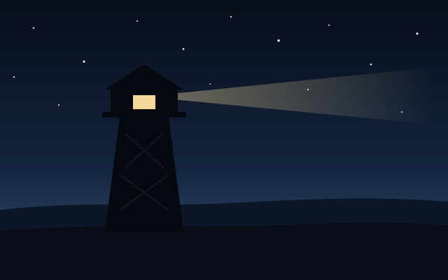

Night Watch
Stay Awake. Stand Firm. Be Ready. An evening program for staying spiritually awake: examining the times through Scripture and helping households prepare without living in fear.

Evenings
Prophecy, preparedness and spiritual watchfulness
Host to be announced
Phase 2
The full program page is next
An evening program for staying spiritually awake: examining the times through Scripture and helping households prepare without living in fear.
- Segments: The Watchman's Report, Preparedness Corner, Scripture Under the Lamp, Questions From the Watchtower
- Host profile (published once the host approves it)
- Episode archive and broadcast times